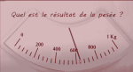
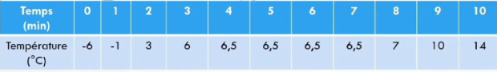
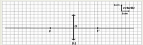
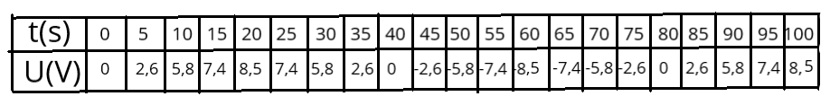
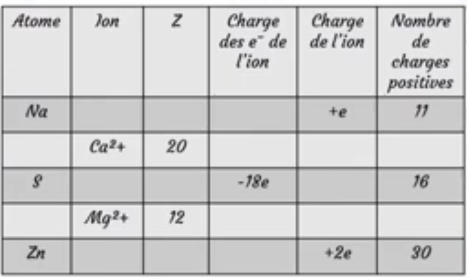
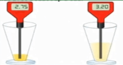
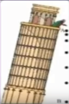
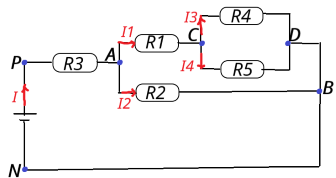
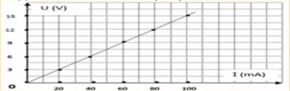
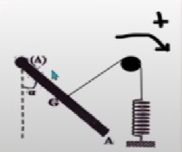

Collège
1ère Année:
**Enoncé 1:
*(Solution homogène-hétérogène)
On dispose de quatre béchers A,B,C et D contenant chacun 2 litres d’eau .
On ajoute respectivement dans ces béchers 500g,600g,700g et 800g de sel.
(Sachant qu’on peut dissoudre 360g de sel au maximum par litre de solution).
1/ Indiquer les béchers qui contiennent une solution homogène.
2/ Indiquer le bécher qui contient une solution saturée.
3/ Indiquer le bécher qui contient une solution hétérogène et calculer la masse déposée.
**Enoncé 2:

**Enoncé 3:
*Avant la plongée,une bouteille d'air comprimé pèse 26,2kg.Au retour de la plongée,
elle ne pèse plus que 22,6kg.
1-Quelle est la masse d'air qui a été consommée
au cours de la plongée?
2-Dans les conditions usuelles,la masse d'un litre
d'air est 1,2g
Déduis-en le volume d'air qui a été consommé
(ce volume est mesuré dans les conditions usuelles).
**Enoncé 4:
*Le sucre est un solide blanc soluble dans l'eau.On peut dissoudre jusqu'à 2000g
de sucre dans un litre d'eau(2000g/L).
1/ Expliquer ce qui se passe
en solution lorsqu'on ajoute du sucre à l'eau.
2/ On introduit dans un verre d'eau contenant 100ml d'eau des morceaux de sucre
de masse 150g.
*Le sucre se dissout-il complètement dans l'eau?justifier.
3/ En plaçant le verre au soleil,on constate qu'au bout de quelque temps,25% de
l'eau s'évapore.
*La solution obtenue est-elle saturée?justifier.
**Enoncé 5:
*Voici des températures relevées au cours du chauffage de cyclohexane.

1- Décrire ce qui se passe au cours du chauffage.
2- Le cyclohexane est-il un corps pur? Justifier.
3- Indiquer les états physiques du cyclohexane durant ce chauffage.
4- S'agit-il d'une fusion ou d'une solidification ?
5- Quelle est la température de solidification du cyclohexane?Justifier.
6- On continue de chauffer le cyclohexane,peut-on observer un palier de température?Justifier.
7- Quel sera l'état physique du cyclohexane à 85°C?
Sachant que la température d'ébulition est 80°C.
**Enoncé 6:
On mélange 100ml d'un liquide L1 de masse volumique 0,79g/cm3 avec 200ml d'un liquide L2 de masse volumique 1,2g/cm3.
1- Dessiner ce qu'on devrait observer,sachant que L1 et L2 sont non miscibles.
2- Calculer la masse volumique du mélange.
**Enoncé 7:
Soit le circuit représenté ci-dessous,il comporte un générateur et plusieurs lampes.
Seules les lampes L6 et L7 sont identiques.
On donne: I1=0,1A et I4=20mA
UAB=4V : UCB=-2V : UGD=7V : UED=-1V et UGF=10V
1/ Indiquer le sens du courant dans chaque branche du circuit.
2/ Comparer,en justifiant votre réponse,les valeurs de I2 etr I4.
3/ Ecrire la loi des noeuds au noeud A.
4/ En déduire la valeur de I2.
5/ Indiquer sur le schéma du circuit l'emplacement de l'ampèremètre pour mesurer l'intensté I3.
6/ Calculer I5,I6 et I7.
7/ Représenter les tensions UAB et UCB.
8/ En appliquant la loi des mailles dans la maille ABCD.Déterminer la tension UDA.
9/ Calculer la tension UGA.
10/ Représenter sur le schéma du circuit le branchement du voltmètre qui de mesurer UGA.
11/ Comparer,en justifiant votre réponse les tensions UEF et UHF.
12/ Déterminer les valeurs des tensions UEF et UHF.
**Enoncé 8:
**Revision pour la préparation du Contrôle:
2ère Année:
CHIMIE:
**Enoncé 1:
Nous apportons un mélange de 15,5g d'aluminium(Al)et 32g de soufre(S).
Lors du chauffage du mélange,il se produit 37,5g de sulfure d'aluminium (Al2S3).
1/ Déterminer les réactifs et le produit.
2/ Ecrire le bilan littéral de cette réaction.
3/ Ecrire l'équation de cette réaction.
4/ Sachant que le soufre n'a pas disparu complètement.
4-1/ Calculer la masse du soufre réactive.
4-2/ Déduire la masse du soufre restante.
5/ Calculer la masse d'aluminium à utiliser au début pour que les deux corps disparaissent ensemble.
**Enoncé 2:
Les atomes d'Or sont arrangés rn réseau cubique à face centrée:
Huit atomes d'Or (en bleu) forment un cube et six autres d'Or se trouvent au milieude chaque face(en rouge).
Le coté du cube a = 0,408nm.(Avec 1nm=10-9m=10-11cm).

1/ Quelle est la longueur de la diagonale du carré,distance entre les centres des atomes 1et2?
2/ En déduire le rayon r de l'atome d'Or.
**Enoncé 3:
On réalise l'équilibre suivant:
On renverse ensuite le flacon.L'acide chlorhydrique(HCl) réagit avec le calcaire(CaCO3)(fig.2)
Il se forme du dioxyde de carbone et du chlorure de calcium(CaCl2)et de l'eau.
1/ L'équilibre est-il maintenu ? Justifier la réponse.
2/ Ecrire l'équation-bilan de la réaction.
**Enoncé 4:
Equilibrer les équations suivantes:
Equation 1: C2H6 + O2---> CO2 + H2O
Equation 2: H2SO4 + S ---> SO2 + H2O
Optique:
**Enoncé 1:
Soient deux lentilles convergentes L1 de distance focale f1=5cm et L2 de vergence C2= 25δ.
1/ Calculer la vergence C1 de la lentille L1.
2/ Calculer la distance focale f2 de la lentille L2.
3/ Soit L une lentille équivalente aux deux lentilles L1 et L2 de telle sorte que C= C1 + C2 avec C vergence de L.
Montrer que : f = f1xf2/f1+f2
**Enoncé 2:
On considère le schéma suivant:

Depuis ce schéma:
1/ Déterminer la distance focale de cette lentille: f= ? cm.
2/ Calculer la vergence C de cette lentille.
3/ Dans le schéma précédant,on place un objet AB=1,5cm à une distance OA = 6cm.
3-1/ Tracer l'image A'B' de l'objet AB dans le schéma précédent.
3-2/ Déterminer les caractéristiques de l'image A'B'.
4/ On rapproche l'objet AB de telle façon la distance OA= 2cm,déterminer les caractéristiques de l'image A''B''.
Electricité:
**Enoncé 1:
On considère le circuit du document ci-dessous.Des mesures effectuées donnent:
UPN=12V , UBC=5,2V.

1/ Que vaut UAC ?
2/ Calculer UAB.
3/ Quelle est la valeur de UDE?.
**Enoncé 2:
Observation de la tension délivrée par un GTBF.

1/ Que signifie les lettres G.T.B.F.
2/ On a relevé dans le tableau ci-dessus les valeurs de la tension toutes les 5 secondes.
Sans tracer la courbe déterminer:
*La période T.
*La fréquence f.
*La valeur maximale Umax.
*La valeur efficace Ueff de cette tension.
**Enoncé 1:
A/ Complète les phrases en utilisant les mots suivants:Objet(s)-Matériau(x).
1- Un .....peut être fabriqué à partir de différents......
2- Les trois classes principales des.......utilisés au quotidien sont les verres,les plastiques et les métaux.
3- Une bouteille est ......qui peut être fabriqué à partir d'un......tel que le verre.
4- Une boite d'emballage est un......qui peut être fabriqué à partir de plusieurs.....
5- Le verre est un......utilisé pour fabriquer des......tels que les bouteilles.
B/ Distiguer les objets et les matériaux:
Un verre-Règle-Le Verre-Robinet-Laine-Polyéthylène-Voiture-Vélo-Fourchette-Fenêtre
PVC-Cuivre-Plastique-Zinc-Radio-Stylo.
(La Solution 1):*Différence entre Objets et Matériaux.
**Enoncé 2:
1/ Remplissez le tableau:

2/ Soient les ions suivants: NO3- , OH- ,H3O+ ,SO42- , CO32-.
2-1/ Nommer ces ions et classer les en cation et en anion.
2-2/ Calculer le nombre des électrons dans ces ions:sachant que Z(H)=1 , Z(C)=6 ,Z(O)=8 ,Z(N)=7 ,Z(S)=16.
(La Solution 2):*Comprendre la différence entre atome et ion .
**Enoncé 3:
On introduit dans un tube à essai contenant de l'aluminium en poudre, on verse 5ml d'une solution aqueuse
d'acide chlorhydrique(H+,Cl-) ,il se produit une réaction chimique et l'on observe un dégagement gazeux .
Il se forme également des ions aluminium de formule Al3+.
1- Comment peut-on mettre en évidence le dihydrogène? Quelle est sa formule?
2- Ecris les formules de l'acide chlorhydrique et du chlorure d'aluminium.
3- Ecris le bilan,puis l'équation-bilan de la réaction ,en indiquant toutes les espèces.
4- Simplifie cette équation.
(La Solution 3):*Action de l'acide chlorhydrique sur Aluminium.
**Enoncé 4:
A/ Pour chaque phrase,coche la bonne réponse.
a-Le pH d'une solution renseigne sur:*La quantité d'eau qu'elle contient.*Sa température. *Son acidité.
b-Une solution est acide lorsque son pH est:
*Egale à 7. *Inférieur à 7. *Supérieur à 7.
c- Pour mesurer le pH d'une solution ,on peut:
*Utiliser un thérmomètre. *Utiliser une balance. *Utiliser un papier indicateur.
d- Les solutions acides et basiques concentées sont dangereuses car elles sont:
*Corrosives. *Explosives. *inflammables.
B/ Les résultats des mesures de pH de diverses solutions sont donnés ci-desssous.
1-Complète le tableau en indiquant si la solution est acide,basique ou neutre.
2- Quelle est la solution la plus acide?la plus basique?.

C/ Sophia se demande comment évolue l'acidité d'un jus d'orange lorsqu'on le dilue avec beaucoup d'eau.

(La Solution 4):*Détermination de la nature d'une solution aqueuse par son pH.
**Enoncé 5:
On donne: La charge élementaire e=1,6.10-19 C.
Les numérox atomiques des atomes suivants:
Z(Na)=11 , Z(Mn)=25 , Z(Ag)=47 , Z(Ni)=28
La charge éléctrique du noyau d'un atome inconnu noté X est égale à 7,52.10-18 C.
1/ Quel est la valeur de la charge du cortège électronique de l'atome X.
2/ Déterminer le numéro atomique de l'atome X.
3/ Donner le symbole chimique de l'atome X.
4/ L'atome X perd un électron pour se transformer en ion.
4-1 Donner le symbole de cet ion.
4-2 Quel est la valeur de la charge du cortège électronique de cet ion?.
4-3 Quel est la valeur de la charge globale de cet ion?.
(La solution 5):*Comment se forme l'ion?.
MECANIQUE:
**Enoncé 1:
Compléter le tableau suivant:
(La Solution 1):*Comment caractériser et modéliser une force ?.
**Enoncé 2:
Le document ci-dessous montre la représentation successive du mouvement(Chronophotographie)d'une balle tombant du haut
de la tour de Pisa en ITALIE,à partir du point A vers le point B avec la distance AB=50,7m.
1/ Quelle est la nature du mouvement de la balle qui tombe ,justifie ta réponse.
2/ Calculer en unité(m/s)la vitesse moyenne de la balle entre les deux points A et B,notez que l'intervalle de temps entre
deux images sccessives est ∆t=0,5s.

(La Solution 2):*Mouvement-Vitesse.
**Enoncé 3:
On fait suspendre un corps solide A de masse 600g par un fil(Schéma).
1/ Faire le bilan des forces exercées sur le corps A.
2/ Représenter ces forces sur le schéma avec une l'échelle:1cm pour 2N.
On donne: g= 10N/kg.
(La Solution 3):*Bilan et Représentation des forces.
**Enoncé 4:
La voiture de Mohammed est tombée en panne sur la route nationale, et il était confus où il va placer le panneau d'avertissement
(le triangle de pré signalisation ou de sécurité) pour les usagers de la route,craignant que quelqu'un entre en collision avec lui,
alors il l'a placé au hasard au bord de la route derrière la voiture.
Données:*La vitesse maximale autorisée sur la route nationale est de V= 100km/h.
*La durée de la réaction est tr=0,45s,et la distance de freinage DF=54m.
1/Aider Mohammed à mettre le panneau d'avertissement derrière la voiture au bon endroit.
2/Le 18 février ,le Maroc célébre la journée nationale de la sécurité routière ,
d'après tes connaissances concernant les règles de la sécurité routière.
Donner deux conseils à Mohammed et à tous les conducteurs à cette occasion.
(La Solution 4):*La sécurité routière.
ELECTRICITE:
**Enoncé 1:
Une batterie d'accumulateur au plomb alimente les lampes d'une automobile.
La tension entre les bornes de la batterie est de 11,9V et l'intensité du courant qui passe dans la batterie est 10,3A.
1/ Quelle est la puissance électrique fournie par la batterie?
2/ Dans ces conditions, le fonctionnement de la batterie dure 17min.Quelle est l'énergie électrique transférée dans les circuits récepteurs?
(La Solution 1):*Puissance et énergie d'une batterie d'accumulateur..
**Enoncé 2:
Soit le montage suivant:

1- Représenter UAB , UPN ,UCA ,UBN et UCB.
2- Que vaut UBN?
3- Représenter le sens des courants.
4- Calculer UPA.
5- Calculer I et I2.
6- Calculer R2 , R1.
7- Calculer UCB.
8- Calculer I3 et I4 .
9- Calculer R5.
10- Calculer Req la résistance équivalente aux 5 résistances en 4 étapes rédigées.
(La Solution 2):*La tension et l'intensité du courant .
**Enoncé 3:
On associe en série à un conducteur ohmique de résistance R=100Ω,une lampe(4V;0,15A).
Le générateur délivre une tension de 24V.

1/ A l'aide d'un voltmètre branché aux bornes de la lampe ,on mesure UL=6V.
En déduire la valeur UR de la tension aux bornes du résistor.
2/ Calculer l'intensité du courant qui circule dans le circuit.
En déduire l'éclairement de la lampe?
3/ On veut que la lampe éclaire normalement.
a- Quelle doit être la tension aux bornes de la lampe et l'intensité qui traverse cette lampe.
b- Pour pouvoir faire normalement cette lampe ,on branche en série une résistance supplémentaire.
Quelle doit être la valeur de cette résistance?
(La Solution 3): *Comment on applique la loi d'Ohm-loi d'additivité de tensions? .
**Enoncé 4:
On réalise le montage électrique suivant.
1/ Nommer et indiquer le rôle des élements(1),(2),(3)et(4) de ce montage.
2/Préciser l'intérêt de ce montage?
3/ Grâce à ce montage on a pu dresser la courbe suivante qui représente l'évolution de la tension U aux bornes
du dipôle (2)en fonction de l'intensité I qui le parcourt.

a- Qu'appelle t-on cette courbe?
b- Calculer graphiquement la résistance du dipole(2).
c- En déduire l'intensité du courant qui le parcourt lorsqu'on applique entre ses bornes une tension de 75V.
(la Solution 4): *Tension-Intensité-Résistance..
**Enoncé 5:
Une batterie d'accumulateur au plomb alimente les lampes d'une automobile.
La tension entre les bornes de la batterie est de 11,9V et l'intensité du courant qui passe dans la batterie est 10,3A.
1/ Quelle est la puissance électrique fournie par la batterie?
2/ Dans ces conditions,le fonctionnement de la batterie dure 17min.
Quelle est l'énergie électrique transférée dans les circuits récepteurs?
(la Solution 5): *Puissance et énergie d'une batterie d'accumulateur....
Lycée
Tronc Commun:
CHIMIE:
**Enoncé 1:
Une cartouche de gaz contient V=700ml de butane C4H10 à l'état liquide.
Dans cet état sa masse volumique est ρ=0,6g/ml.
Lorsque l'on ouvre la cartouche le butane change d'état physique et on le récupère à l'état gazeux.
1/ Calculer la masse de butane liquide dans la cartouche.
2/ Quelle est la quantité de matière de butane dans la cartouche?
3/ Quel volume total de gaz peut-on espérer recueillir?
Données: M(C)==12g/mol; M(H)=1g/ml; M(O)=16g/ml
NA=6,02.1023 mol-1 ;Volume molaire V=24l/mol.
Solution 1:*Notion de mole..
**Enoncé 2:
Par définition,un vinaigre de 6° contient 6g d'acide acétique C2H4O2
dans 100g de vinaigre.
1/ Calculer la quantité d'acide acétique n contenu dans 100g de vinaigre à 6°.
2/ Calculer le volume V d'acide acétique contenu dans 100g de ce vinaigre.
Données: Masse volumique de l'acide acétique:
ρ=1,05g/L ; M(C)=12g/mol ; M(H)=1g/mol ; M(O)=16g/mol.
(Solution 2):*Masse molaire et Mole .
**Enoncé 3:
Le chloroforme est une substance anésthésiante dans les opérations chirurgicales.
La molécule du chloroforme est constituée,uniquement du carbone,du chlore et d'hydrogène.
Ses pourcentages atomiques en chlore et en carbone sont 60% et 20%.
On considère que la formule brute de cette molécule est de forme CxHyClz.
Avec x,y et z des nombres entiers.
1/ Trouver la relation entre x,y et z .Peut-on déduire ses valeurs?.
2/ La molécule de chloroforme ne contient qu'un seul atome de carbone .Déterminer les valeurs de x,y et z.
3/ Proposer une représentation de Lewis pour la molécule de chloroforme.
4/ Proposer une structure géométrique de la molécule.
(Solution 3):*La géométrie de la molécule chloroforme. .
**Enoncé 4:
Déterminer la composition(nombre de protons,de neutrons et des électrons) des atomes suivants:
Nombre de masse: (58)Ni (9)Be (20)Ne (208)Pb (22)Ne (60)Ni (31)P (75)As (62)Ni
Données: Z(Be)=4 Z(Ne)=10 Z(P)=15 Z(Ni)=28 Z(As)=33 Z(Pb)=82
(Solution 4:)*Composition d' atome...
**Enoncé 5:
On considère le noyau de l’atome : X
Avec A=2.Z +3
1/Sachant que le nombre de neutrons dans le noyau est N=20 Trouver la valeur des nombres Z et A.
2/ En se basant sur le tableau périodique donner le nom de l’élément chimique et sa représentation symbolique.
3/ Ecrire la structure électronique de cet atome.
4/ Définir la couche externe. Est-ce que cette couche est saturée ou non? Combien y a-t-il d'électrons de valence?
(Solution 5:)*Représentation symbolique d'un atome...
PHYSIQUE:
**Enoncé 1:
Quand on suspend une masse de 0,2kg à l'extrémité d'un ressort de raideur K=100N/m.
sa longueur finale est 12cm ,quand on suspend une masse de 0,7kg, sa longueur finale est 17cm.

1- Donner le bilan des forces exercées sur la masse.
2- Déterminer la longueur initiale du ressort.
(Solution 1):*Comment on calcule la longueur initiale d'un ressort?..
**Enoncé 2:
Quelle est la force d'attraction exercée par la terre sur un satellite artificiel de masse m=600kg,qui tourne autour de la terre
à une altitude h=36000km de sa surface?
Données:
*Masse de la terre:M=6.1024kg.
*Rayon de la terre:R=6400km
*Constante d'attraction universelle: G=6,67.10-11(SI).
(Solution 2):*Force de la terre sur un satellite..
**Enoncé 3:
Une barre(OA)homogène de masse m=1kg et de longueur L pouvant tourber sans frttement autour d'un axe horizontal
passant par son extrémité O,est enéquilibre comme l'indique la figure ci-dessous.
Le fil est fixé au centre G de la barre,passe sur la gorge d'une poulie et est fixé par l'autre extrémité à un ressort
verticale de raideur K ,à l'équilibre,le fil est normal à la barre,est α=30°.

1/ Faire l'inventaire des forces appliquées sur la barre(OA) et les representer sans souci d'échelle.
2/ Ecrire l'énoncé du théorème des moments.
3/ Par application de ce théorème,trouver l'intensité de la tensiondu fil.
4/ Déduire la valeur de la raideur du ressort sachant que son allongement est ∆l=5cm. g=10N/kg.
(Solution 3):*Théorème de moments des forces....
1ère Année BAC:
CHIMIE:
**Enoncé 1:
On mélange dans un ballon 1,0 mol d'éthanoate de méthyle pur avec 1,0 mol d'eau distillée,
on ajoute quelques gouttes d'acide sulfurique concentré
et on chauffe à reflux le mélange réactionnel pendant un certain temps.
Une réaction chimique se produit.
A l'équilibre ,il reste 0,67 mol d'éthanoate de méthyle.
1/ Quel est le rôle de l'acide sulfurique ajouté?
2/ Citer deux caractéristiques de cette réaction.
3/ Ecrire l'équation de la réaction chimique étudiée en utilisant les formules semi-développées.
4/ Calculer la constante d'équilibre K associée à l'équilibre de cette réaction chimique.
(Solution 1):*Réaction d'hydrolyse(éthanoate de methyl.)..
**Enoncé 2:
Un iceberg a un volume total V = 5000m3.
La masse volumique de la glace vaut 900kg/m3.
1/ Calculer la quantité de matière d'eau dans cet iceberg.
2/ En déduire le nombre de molécules d'eau dans cet iceberg.
On donne: M(H) =1 g/mol M(O)=16g/mol. NA= 6,02 .1023 mol-1.
(Solution 2:)*Calcul le nombre de molécules d'eau dans un Iceberg. Quantité de matière.....
**Enoncé 3:
Ecriture des demi-équations:
Exemple des couples:
1/ NO3/NO
2/ CH3COOH/C2H5OH
(Solution 3:)*Demi-equation redox....
PHYSIQUE:
**Enoncé 1:
Un solide(S) de masse m=0,2 kg est maintenu en équilibre sur un plan incliné parfaitement lisse d'inclinaison α=30° par rapport à l'horizontale par l'intermédiaire d'un ressort de constante de raideur K=40N/m.
L'axe du ressort fait un angle ß=20° avec le plan incliné.
1/ Faire l'inventaire des forces appliquées au solide (S) et les représenter sur le schéma.
2/ Exprimer l'allongement ∆L du ressort ,en fonction de m,g,α,Ketß.
3/ Exprimer R l'intensité de la réaction du plan en fonction de m,g,α,K, ∆Letß.
4/ Calculer la valeur de ∆L puis la valeur de R.
Donnée: g= 10N/kg.

**Enoncé 2:
A/ Un électrolyseur est traversé par une quantité d'électricité de charge 72000C pendant 2h.
Quelle est l'intensité du courant dans les conducteurs du circuit?
B/ On recharge durant 12 h une batterie d'accumulateurs avec un courant constant d'intensité 5A.
Quelle quantité d'électricité correspond à cette charge?
C/ Sur une batterie de téléphone portable,il est indiqué 1,3Ah.
Le télephone consomme en moyenne 0,08A. Calculer la durée au bout de laquelle la batterie est complètement déchargée?
D/ Dans un noeud de 5 conducteurs on mesure la valeur de l'intensité de 4 conducteurs suivant le dessin suivant:

Calculer la valeur Ie du cinquième conducteur et son sens?
(Solution 2:)*Détermination de la quantité d'électricité et la durée de passage de courant......
2ème Année BAC:
CHIMIE:
**Enoncé 1:
On considère les espèces chimiques suivantes:
C6H5O2H , HCOO- ,HO- , NH4+ ,HF , HCOOH , F- ,NH3 C6H5CO2 , H2O:
1/ Former les couples acide/base.
2/ Ecrire les équations des réactions acido-basiques avec l'eau des ces espèces chimiques.
(Solution 1):*Acide et base selon Bronsted..
**Enoncé 2:
Ecrire les demi-équations des couples suivants:
1/ Cr2O72- / Cr3+.
2/ MnO4- / Mn2+.
(Solution 2):* Les demi-équations du couple oxydoréduction..
**Enoncé 3:
On considère l'oxydation lente de l'acide oxalique par les ions permanganate.
A l'instant t=0 on mélange un volume de Vo= 25mL de la solution permanganate de potassium,
de concentration Co=0,01mol/L et un volume de Vr=20mL de l'acide oxalique de concentration Cr=0,1 mol/L.
On ajoute un volume de 5 mL d'acide sulfurique pour acidifier la solution.L'ion permanganate(MnO4-)
et l'acide oxalique (H2C2O4),appartiennent aux couples redox suivants: MnO4-/Mn2+
CO2/H2C2O4
1/ Ecrire les demi-équations électroniques relatives aux couples et établir l'équation de la réaction.
2/ Déterminer les quantités de matière des réactifs mis en présence.
3/ Dresser le tableau descriptif,déduire deux réactifs mis en présence,
quel est celui qui constitue le facteur limitant?
4/ Quelle est la concentration des ions manganèse en fin de réaction?
5/ L'ion (MnO4-)en solution est de couleur violette.
L'acide oxalique et l'ion manganèse en solution sont incolores,comment peut-on mettre en évidence l'évolution de la réaction.
(Solution 3):* Comment on différencier entre la Réaction lente et la Réaction rapide ?
PHYSIQUE:
**Enoncé 1:
Un pointeur laser utilisé par un conférencier,émet un faisceau lumineux de fréquence V=422THz et de puissance P=2mW
par une ouverture circulaire de diamètre d1=2mm,ilproduit une tache lumineuse de diamètre d2=10mm sur un écran situé à une distance D=10m de l'ouverture.
Donnée: C=3.108m/s.

1/ Calculer la longueur d'onde de la lumière émise par le laser dans l'air.
Quelle est la couleur du faisceau?
2/ Calculer la valeur de l'angle Ɵ appelé divergence du faisceau.
3/
a- Quelle est l'aire A de la tache lumineuse obtenue sur l'écran?
b- On admet que toute la puissance émise est transportée jusqu'à l'écran.
Calculer la puissance lumineuse par unité de surface reçue par l'écran.
c- Le faisceau est dangereux pour l'oeil humain si la puissance reçue par unité de surface est supérieure = 20W/m2..Conclure.
(Solution 1):*Propagation lumineuse-- Danger du rayon laser..
**Enoncé 2:

(Solution 2):*Application de la 2ème loi de Newton (Mécanique)..
**Enoncé 3:

(Solution 3):*La Chute Verticale d'un solide dans un liquide avec frottement....
**Enoncé 4:

(Solution 4):*Équations horaires du mouvement d'un mobile......